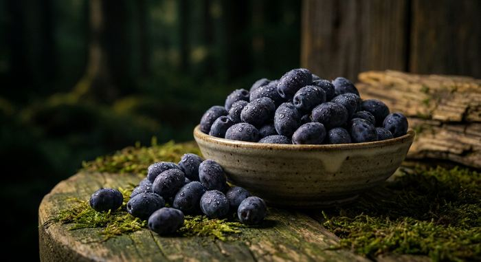

ハスカップ・ベリー系ジン完全ガイド
使用銘柄16本を徹底比較

ハスカップやブルーベリー・ラズベリー・いちごなどのベリー類は、柑橘とも樹木とも違う果実の香りを持ち込むボタニカルです。なお、Gin-DB掲載銘柄には、公式情報でハスカップの使用が確認できたものは現時点でありません。
本ページの銘柄は、Gin-DB掲載の全銘柄から公式情報でハスカップ・ベリーの使用が確認できたもののみを抽出しています。最終更新：2026-08-29
ハスカップ・ベリーのジンを買う
このページの掲載銘柄のうち、国際コンテストの受賞歴があり、公式希望小売価格が確認できているものだけを載せています。編集部の主観による順位づけはしていません。掲載外の銘柄も、各銘柄ページから購入先を開けます。
PR ／ アフィリエイトリンクを含みます。
1. ハスカップとは
ハスカップはスイカズラ科スイカズラ属の落葉低木の果実で、北海道が主要な産地として知られています。和名はクロミノウグイスカグラ。名称はアイヌ語に由来するとされ、北海道を象徴する果実のひとつです。
生食用としてはあまり流通せず、加工用途が中心です。強い酸味と濃い色素を持つ果実です。
2. ベリー類がジンにもたらすもの
ベリー類は、柑橘のように皮の精油で香りを出す素材とは違い、果実そのものを使う素材です。ただし蒸留したジンには果実の糖や酸はほとんど移らないため、蒸留で取り出せるのは主に香りです。
Gin-DB掲載銘柄では、ブルーベリー（9148 #0101 STANDARD、RETROGRADE）、ラズベリー（明時（AKATOKI）ORIGIN）、いちご（KOBE HERBAL GIN 白風 #01）などを使う例があります。
3. ベリー系ジンの飲み方
ソーダ割りが最も素直です。炭酸が香りを持ち上げ、果実の香りがはっきりします。
トニックウォーターの甘みとも相性が良く、ベリー系ジントニックは入門者向けの組み合わせとして扱いやすい選択です。
色が付いている銘柄であれば、カクテルの見た目にも効きます。
4. ハスカップ・ベリーを使用しているクラフトジン 16銘柄
Gin-DB掲載の全銘柄から、公式情報でハスカップ・ベリーの使用が確認できたもののみを抽出しています。度数・容量・価格は各蒸溜所の公式情報に基づき、確認できないものは「未確認」と表示しています。
1. 明時（AKATOKI）ORIGIN（オリジン）
十勝平野蒸溜所（北海道中川郡幕別町）
47% ／ 500ml ／ ¥4,950（税込・希望小売価格）
定番（同蒸溜所初のレギュラー商品、2025年10月10日発売）。TWSC2026 金賞
2. 9148 #0101 STANDARD
紅櫻蒸溜所（北海道札幌市南区）
45% ／ 700ml ／ ¥6,380（税込・公式オンライン）
3. RETROGRADE
鷹栖蒸溜所（北海道上川郡鷹栖町）
47% ／ 700ml ／ ¥5,500（税込・正規流通）
4. TATEYAMA GIN BLEND Series
TATEYAMA BREWING（千葉県館山市）
200ml ／ ¥2,200（税込）
5. 橘花 KIKKA GIN 朱華（はねず）
大和蒸溜所(油長酒造)（奈良県御所市）
43% ／ 700ml ／ ¥5,500（税込・公式）
6. 富士山 BLUE GIN
なだや富士山蒸溜所（山梨県富士吉田市）
42% ／ 200ml／30ml ／ 未確認
2025年モンドセレクション 優秀品質金賞（Gold Quality Award）（蒸溜所公式お知らせ）。2024年7月発売。トニック等で青から朝焼け色に変色
7. NAKATSU GIN（ドライジン）
中津川蒸留所（岐阜県中津川市）
50% ／ 500ml ／ ¥3,850（税込・公式）
8. 道後ジン 六媛（ろくひめ）
水口酒造（愛媛県松山市道後）
40% ／ 500ml ／ 市場実勢 約¥5,500
9. 道後ジン 六媛
水口酒造（愛媛県松山市道後）
40% ／ 200ml ／ ¥2,200（税込・公式）
10. Lord Rasperton's Raspberry Field Gin
Blue Rabbit Distillery（東京都大田区田園調布）
700ml ／ ¥6,950（税込・公式EC）
11. ORI-GiN 1848 Strawberry
瑞穂酒造（沖縄県那覇市首里）
45% ／ 500ml ／ ¥4,070（税込・公式）
12. 森のジン 薔薇
ぶどうの森蒸留所（MORI NO NIWA）（石川県金沢市）
43% ／ 480ml／240ml ／ ¥5,280（480ml）／¥2,860（240ml）（税込・公式）
公式ECの表記はA03
13. KITAYA CRAFT GIN
喜多屋（福岡県八女市）
45% ／ 500ml ／ ¥4,400（税込・公式）
14. GOTOGIN the origin
五島つばき蒸溜所（長崎県五島市）
47% ／ 500ml ／ ¥5,500（税込・公式EC）／ギフトBOX入り¥6,050（税込）
15. 香の森（KANOMORI）
養命酒製造 駒ヶ根工場（長野県駒ヶ根市）
47% ／ 700ml ／ ¥5,192（税込・公式希望小売）
2026-09-20時点で養命酒の公式サイトの商品一覧に掲載が無い（終売の告知は未確認）
16. KOMASA GIN 苺
小正醸造（鹿児島県日置市日吉町）
45% ／ 500ml ／ ¥3,850（税込・公式）
5. 16銘柄スペック比較表
| # | 銘柄 | 所在地 | 度数 | 価格 |
|---|---|---|---|---|
| 1 | 明時（AKATOKI）ORIGIN（オリジン） | 北海道 | 47% | ¥4,950（税込・希望小売価格） |
| 2 | 9148 #0101 STANDARD | 北海道 | 45% | ¥6,380（税込・公式オンライン） |
| 3 | RETROGRADE | 北海道 | 47% | ¥5,500（税込・正規流通） |
| 4 | TATEYAMA GIN BLEND Series | 千葉県 | 未確認 | ¥2,200（税込） |
| 5 | 橘花 KIKKA GIN 朱華（はねず） | 奈良県 | 43% | ¥5,500（税込・公式） |
| 6 | 富士山 BLUE GIN | 山梨県 | 42% | 未確認 |
| 7 | NAKATSU GIN（ドライジン） | 岐阜県 | 50% | ¥3,850（税込・公式） |
| 8 | 道後ジン 六媛（ろくひめ） | 愛媛県 | 40% | 市場実勢 約¥5,500 |
| 9 | 道後ジン 六媛 | 愛媛県 | 40% | ¥2,200（税込・公式） |
| 10 | Lord Rasperton's Raspberry Field Gin | 東京都 | 未確認 | ¥6,950（税込・公式EC） |
| 11 | ORI-GiN 1848 Strawberry | 沖縄県 | 45% | ¥4,070（税込・公式） |
| 12 | 森のジン 薔薇 | 石川県 | 43% | ¥5,280（480ml）／¥2,860（240ml）（税込・公式） |
| 13 | KITAYA CRAFT GIN | 福岡県 | 45% | ¥4,400（税込・公式） |
| 14 | GOTOGIN the origin | 長崎県 | 47% | ¥5,500（税込・公式EC）／ギフトBOX入り¥6,050（税込） |
| 15 | 香の森（KANOMORI） | 長野県 | 47% | ¥5,192（税込・公式希望小売） |
| 16 | KOMASA GIN 苺 | 鹿児島県 | 45% | ¥3,850（税込・公式） |
6. よくある質問（FAQ）
Q. ベリー系ジンは甘いですか？
A. ジンは蒸留酒なので、原料の果実由来の糖はほとんど残りません。「甘い」と感じるのは香りによるもので、リキュールのような甘さとは別物です。ただし、オールドトム・ジンのように蒸留後に糖分を加える製品や、リキュールとして製造されている製品は別です。
Q. 色が付いているのはなぜ？
A. 果実やボタニカルを浸漬させると色素が移ります。蒸留のみで香りを取る製法では無色になります。色の有無は製法の違いです。